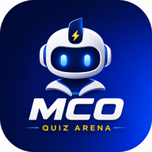

MODE HORS LIGNETu peux continuer à réviser.
Les leçons et fiches déjà ouvertes restent disponibles. Un Live nécessite une connexion Internet.

MODE HORS LIGNELes leçons et fiches déjà ouvertes restent disponibles. Un Live nécessite une connexion Internet.